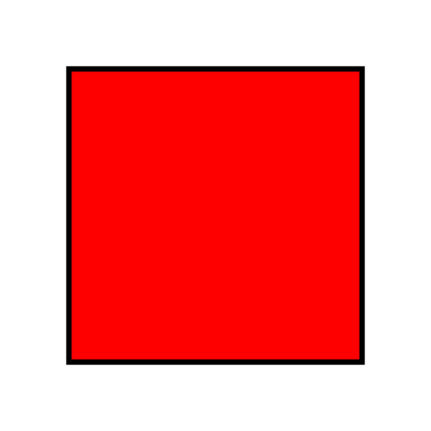

Image maps
Designing with image maps
An image map links geometric areas of an image. It consists of an <img> element and a <map> element. The <img> element uses its usemap=”IDREF” attribute to reference the id attribute value of the <map> element. The <map> elements in turn holds <area> elements that each define a clickable region of the image and act as links.
Follow these Best practices for image maps:
- Describe the context in the source <img> element’s alt attribute.
- Describe each clickable region in the <area> element’s alt attribute.
Good example: Image Map
EXAMPLE
Please select a shape:
CODE SNIPPET
<p> Please select a shape:
<img src="shapes.png" usemap="#shapes" alt="Four shapes are available: a red hollow box, a green circle, a blue triangle, and a yellow four-pointed star.">
<map name="shapes">
<area shape=rect coords="50,50,100,100"> <!-- the hole in the red box -->
<area shape=rect coords="25,25,125,125" href="red.html" alt="Red box with square hole.">
<area shape=circle coords="200,75,50" href="green.html" alt="Green circle.">
<area shape=poly coords="325,25,262,125,388,125" href="blue.html" alt="Blue triangle.">
<area shape=poly coords="450,25,435,60,400,75,435,90,450,125,465,90,500,75,465,60" href="yellow.html" alt="Yellow star.">
</map>
</p>
The image map example is from the WHATWG document: 4.8.15 Image maps from the HTML Living Standard. Status: Draft Updated 12 October 2021. https://html.spec.whatwg.org/#image-map
Related WCAG resources
Success Criteria
Techniques